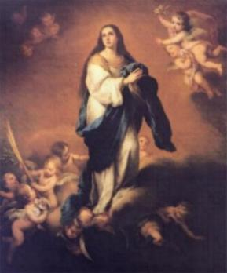
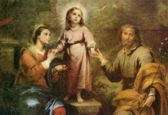
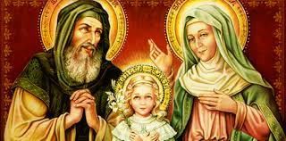
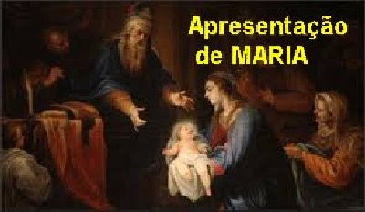
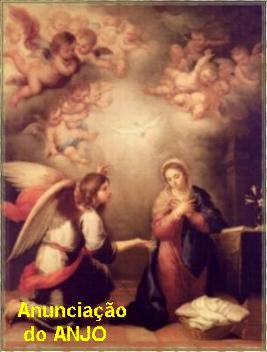
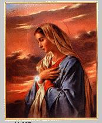

"AMOR DE MÃE"

O verdadeiro carinho acontece
revestido de confiança e dedicado amor, sem existir qualquer preocupação de
torná-lo público, porque é uma manifestação que tem origem no âmago
do coração, e vai se agasalhar na alma da pessoa amada. Sim, porque o afeto
verdadeiro não tem dimensões, a infinitude do seu alcance acontece suavemente
na ternura de palavras verdadeiras ou numa demonstração fervorosamente
afetiva, repleta de meiguice e de amor sincero e honesto.
NOSSA SENHORA é nossa querida e
amada MÃE SANTÍSSIMA, que ao longo da existência da humanidade sempre revelou
o desejo incontido de proteger, auxiliar e socorrer todos os seus filhos,
principalmente aqueles que mais carinhosamente procuram e suplicam a SUA
Maternal e tão eficaz intercessão junto a DEUS. Por essa razão, é mais que
natural, num anseio de afeto filial, a humanidade buscar meios de levar alegria
ao IMACULADO CORAÇÃO DA VIRGEM MARIA, além do cultivo da devoção amorosa. Seja por
manifestações pessoais ou públicas, através de fervorosas e perseverantes
orações, seja participando efetivamente das homenagens e festas realizadas em
SUA honra, tudo como demonstração de agradecimento por SUA bondade
incomensurável. E esta intenção de agradar a MÃE DE DEUS, é uma providência que
deve ser exercitada com atenção e a necessária vontade, sobretudo porque NOSSA
SENHORA é nossa MÃE de fato e de verdade. E foi com este pensamento, que nós do
APOSTOLADO DOS SAGRADOS CORAÇÕES fizemos introduzir em nosso PORTAL este site,
com as “ALEGRIAS DE NOSSA
SENHORA”.
1 - PRIMEIRA ALEGRIA -
“FESTA DA IMACULADA CONCEIÇÃO”:
A Festa está praticamente
relacionada com o princípio da criação. A gravíssima transgressão cometida pelos
nossos primeiros pais (Adão e Eva) cometendo o
“Pecado Original” atraiu o repúdio Divino e se tornou a ruína do gênero humano,
que perdeu todos os bens especiais (não morrer, não ver e nem conversar com DEUS,
e outras graças especiais) que o SENHOR havia reservado para os seus filhos, ou seja,
para a humanidade de todas as gerações, somente permanecendo as graças que habitualmente
recebemos e utilizamos no cotidiano. Todavia, DEUS CRIADOR considerando o SEU DIVINO
PROJETO DE VIDA PARA A HUMANIDADE, abriu uma exceção, quis preservar MARIA desta terrível
mancha e abominável influência do
“Primeiro Pecado”, pelo fato DELA ter sido
escolhida para MÃE DO FILHO DE DEUS, que ia nascer no mundo para reparar os
pecados cometidos por todas as pessoas e Redimir a Humanidade de todas as
gerações, neutralizando a força do Primeiro Pecado. E esta Vontade do PAI
ETERNO CRIADOR estava alicerçada em três justificativas incontestáveis:
1.1- Filha primogênita.
MARIA foi à primogênita no
pensamento do CRIADOR, e ELE a escolheu para uma Missão Especial dentro do
PROJETO DIVINO, e por essa lógica escolha, revestiu-a de todas as graças
especiais além de lhe conceder a prerrogativa de não ter a influência do Pecado
Original. Como afirma São Bernardo de Claraval: “Ninguém pode escolher quem será a sua mãe. Mas
evidentemente se alguém tivesse o poder de escolher a própria mãe, se podendo
eleger uma rainha ele ia escolher uma escrava para sua mãe?” Por isso,"MARIA nasceu cheia de graças."
1.2- Dentro do PROJETO DIVINO.
A SANTÍSSIMA VIRGEM DE NAZARÉ se
tornou a MÃE DO FILHO DE DEUS (JESUS), que nasceu entre nós, e realizou a
admirável Missão Redentora, redimindo toda a humanidade da influência nefasta do
“Pecado Original”,
e deixou meios sagrados, poderosos e eficazes, através
de Sete Sacramentos (Batismo, Crisma, Eucaristia, Confissão, Unção dos Enfermos com
Santo Viático, Sacramento da Ordem e Sacramento do Matrimônio), para a santificação
individual de cada pessoa. E também, como ajuda especial, NOSSO SENHOR deixou sua
própria MÃE MARIA, para ser a MÃE ESPIRITUAL de todos nós e como intercessora de
toda humanidade junto a ELE, no sentido de ouvir e atender as súplicas de todos
os filhos necessitados (todos nós), alcançando do SENHOR, as graças para o bem
da vida de cada um.
1.3- O Nascimento de JESUS.

E para a concretização da
Vinda de JESUS, o ESPÍRITO SANTO DE DEUS, se tornou o esposo da SANTÍSSIMA VIRGEM
MARIA. E como é lógico e natural, sendo esposa do DIVINO ESPÍRITO SANTO, é
evidente que a escolhida MARIA tinha que possuir uma santidade ilibada,
inigualável. MARIA estava cheia de graças. Por isso mesmo, ELA é denominada
Templo do SENHOR e Sacrário do ESPÍRITO SANTO.
Então, são três as razões
perfeitas e inquestionáveis, que demonstram que MARIA, NOSSA SENHORA, é
verdadeiramente a
“IMACULADA CONCEIÇÃO”, ou seja, ELA
está plena de Graças, pois nasceu isenta do Pecado Original, pela Vontade
soberana do SENHOR, e jamais em sua vida terrestre cometeu o menor
pecado que fosse.
A festa da IMACULADA CONCEIÇÃO
DE MARIA começou a ser idealizada em fins do século VII, oportunidade em que foi
celebrada em varias Instituições Religiosa, com hinos e cerimônias, em homenagem
a SANTÍSSIMA VIRGEM MARIA. Na continuidade, desde o início do século VIII, em
vários Conventos do Oriente passaram a serem celebradas festas em louvor da
IMACULADA CONCEIÇÃO DE MARIA. Também, o Imperador do Império Bizantino e do
Mediterrâneo, Manuel Comneno, no ano de 1166 dando realce as homenagens a MÃE DE
DEUS, declarou a referida festa como feriado nacional. Do Oriente a
“Festa da IMACULADA CONCEIÇÃO”
veio para a Europa e particularmente para o sul da
Itália, e depois para a Normandia. Na continuidade, em solo italiano, a Congregação
Franciscana se tornou os maiores e inconfundíveis beneméritos da divulgação e
popularização da Festa, que logo ficou conhecida e se expandiu em toda Europa
e nas Américas.
Por outro lado, como sempre
acontece, surgiram alguns argumentos em outras religiões, não aceitando aquela
prerrogativa de NOSSA SENHORA que LHE foi dada pelo próprio CRIADOR. Eles
afirmavam que o Pecado de Adão e Eva atingiu a humanidade de todas as gerações e
que MARIA sendo humana, não podia ser uma exceção.
Os estudos e as pesquisas se
desenvolveram intensamente, objetivando estabelecer argumentos corretos e provar
que a atitude do PAI ETERNO Todo-Poderoso, foi inconfundível e segundo a SUA plena
Vontade. Afinal ELE é o nosso DEUS CRIADOR. É verdade que o Pecado cometido pelos
nossos Primeiros pais atingiu a humanidade de todas as gerações, e por isso mesmo,
as discussões e réplicas teológicas foram bem ajustados e esclarecidos constituindo-se
em fortes provas. E para sacramentar e testemunhar de modo inquestionável o Poder
e a Atitude Divina, em 1854 NOSSA SENHORA apareceu a Bernadette Soubirous na gruta
de Massabieille em Lourdes na França, diante de uma multidão de pessoas, e revelou:
“EU sou a IMACULADA CONCEIÇÃO”.
Esta era incontestavelmente,“a prova definitiva de que MARIA nasceu
isenta dos efeitos maléficos do Primeiro Pecado”.
O Papa Pio IX declarou dogma de fé à doutrina que ensina “ter sido a MÃE DE DEUS concebida sem mancha, por um especial
privilégio de DEUS”. O dogma foi publicado pela
“Bula Ineffabilis”,
no dia 8 de Dezembro de 1854. E por isso também, a Festa
da IMACULADA CONCEIÇÃO DE MARIA passou a ser realizada anualmente na mencionada
data, dia 8 de Dezembro.
2 - SEGUNDA ALEGRIA -
“FESTA DA NATIVIDADE DE MARIA”:
A Festa do Nascimento de NOSSA
SENHORA começou a ser realizada no Oriente por algumas Ordens
Religiosas; da
noticia
se encontra menção no “Sacramentário
Gelasiano”, que é um livro que enumera as festividades
da Igreja. O Sumo Pontífice Papa Sérgio I (687-701), determinou que no dia da celebração
fosse realizada uma procissão em homenagem a VIRGEM MARIA.
Desde o seu nascimento, a
grandeza da Santidade de MARIA é consequência das infinitas Graças com que DEUS
a enriqueceu, e naturalmente, da sua admirável correspondência às mesmas,
primordialmente no tempo em que viveu entre nós.
2.1- A mais bela criação Divina.
Os teólogos e estudiosos são
unânimes em afirmar, que inegavelmente a Alma de MARIA foi a mais bonita e mais
perfeita, que DEUS criou. São Vicente Ferrer, referindo-se a Santidade de MARIA,
antes do Seu Nascimento, diz ser
“tão grande que excede a santidade de todos os Anjos e Santos”. Isto, por causa da SUA predestinação de ser a “MÃE DO VERBO DIVINO”.
2.2- MARIA cheia de Graças.
 E porque também, desde o início estava
“Cheia de Graças” conforme anunciado pelo Arcanjo São Gabriel: “Alegra-te, cheia de graça, o SENHOR está contigo!” (Lc 1, 28). E verdadeiramente, ELA devia estar “Cheia de Graças” a fim de que
no sublime ofício de Medianeira, intercedendo em favor da humanidade junto a DEUS, alcançasse
os benefícios e as virtudes para o bem-estar de cada um.
E porque também, desde o início estava
“Cheia de Graças” conforme anunciado pelo Arcanjo São Gabriel: “Alegra-te, cheia de graça, o SENHOR está contigo!” (Lc 1, 28). E verdadeiramente, ELA devia estar “Cheia de Graças” a fim de que
no sublime ofício de Medianeira, intercedendo em favor da humanidade junto a DEUS, alcançasse
os benefícios e as virtudes para o bem-estar de cada um.
2.3- MARIA no seio da sua mãe.
Desde quando estava no seio de
Santa Ana, a Graça Santificante que DEUS lhe concedeu, segundo o argumento dos
teólogos, também lhe foi dado o
“Perfeito Uso da Razão”. Então, nossa MÃE SANTÍSSIMA
tendo sido fiel as graças do SENHOR, e exercitando o perfeito uso da razão, descreveu uma
trajetória santificada, digna da “MÃE
DO VERBO ETERNO” e de “RAINHA DO UNIVERSO”.
3 - TERCEIRA ALEGRIA -
“FESTA DA APRESENTAÇÃO DE MARIA NO
TEMPLO”:
A Apresentação de MARIA no
Templo em Jerusalém, pelos seus pais Joaquim e Ana, não estava prescrita na Lei
judaica, mas era permitida. A Lei estabelecia condições somente para os meninos
e os animais machos, que depois de apresentados a JAVÉ seria resgatado conforme
determinava a Lei (Nm 18, 15-16). Mas os pais de
MARIA imbuídos de um profundo
sentimento amoroso conduziram a filha ao Templo, quando ELA tinha apenas três
anos de idade, para apresentá-la a DEUS e colocá-la a disposição do SENHOR. Este
acontecimento deu origem a
“FESTA DE APRESENTAÇÃO DE MARIA”. Nos Conventos
do Oriente a Festa era celebrada desde longa data, provavelmente já no 4º ou 5º século,
e mais ou menos no ano 730 ela foi para Constantinopla. No ano 1166, o Imperador
Bizantino Manuel Comneno decretou que no dia da Festa se fizesse feriado, em
homenagem a SANTÍSSIMA VIRGEM MARIA. Logo depois, a partir do ano 1371, a Festa
foi para a França, tendo sido celebrada em Avinhão na corte do Papa Gregório XI.
E depois, no tempo do Papa Sixto IV (1471-1484), a festa apareceu no Vaticano.
Em 1585, este Pontífice determinou que a Festa se tornasse universal para toda
Igreja Católica.
3.1- O desejo dos pais.
O desejo de Joaquim e Ana
coincidia exatamente com o desejo Divino. Por isso MARIA acolheu prontamente a
idéia da Apresentação no Templo, e com muita alegria fez a oferta de si mesma a
DEUS. Desde o primeiro momento em que ELA foi santificada no seio da sua mãe
(que na verdade foi o primeiro ato de SUA IMACULADA CONCEIÇÃO), também recebeu o
“uso perfeito da razão”
. Esta é a opinião da maioria dos teólogos
que estudaram o assunto. Então, mesmo criança, ELA já conhecia a grandeza de DEUS
e por isso também, a sua apresentação e oferta no Templo foi sem reservas,
realizada conscientemente e com muito júbilo.
3.2- Quanto a educação, MARIA
também aprovou o desejo dos seus pais.
Joaquim e Ana querendo uma
educação primorosa para ELA adotou um costume judeu, de internar as filhas
virgens em casas que existiam ao redor do Templo, onde permaneciam e eram
guardadas, sendo educadas e instruídas pelos sacerdotes. A existência destes
locais ao redor do Templo é atestada por um grande número de escritores e
teólogos, assim como, tem uma passagem no Livro Segundo dos Macabeus, que faz
referência as virgens que habitavam em locais ao redor do Templo. (2Mac 3,19).
Desse modo, desde o inicio da sua vida, MARIA já tinha se consagrado
inteiramente a DEUS, e completou o seu objetivo interior, estudando e ampliando
os seus conhecimentos através dos sacerdotes do Templo, e depois, na
continuidade, ofereceu-se inteiramente a DEUS pelo Voto de Virgindade perpétua,
pela pratica admirável de todas as virtudes, crescendo em perfeição, com a
caridade, a modéstia, a humildade, a mortificação, o silêncio e a mansidão.
3.3- Santo Anselmo fala
da vida de MARIA no Templo.
E descreve que ELA era dócil,
pouco falava se mantendo séria e sem jamais se perturbar. Era perseverante na
oração, na leitura dos Livros Santos, nos jejuns, enfim, em todas as obras
virtuosas. Posteriormente Santa Brígida nas suas revelações, descreveu as
palavras da SANTÍSSIMA VIRGEM MARIA, dizendo: “ELA Procurava ser a primeira nas vigílias; a mais
exata na Divina Lei; a mais profunda na humildade e em todas as virtudes a
mais perfeita. Entre todos os preceitos, tinha particularmente diante DELA,
aquela vontade suprema de amar profundamente a DEUS”.
4 - QUARTA ALEGRIA -
“A FESTA DA ANUNCIAÇÃO DE MARIA”:
Antigamente a
“FESTA DA ANUNCIAÇÃO” era considerada Festa do SENHOR, tendo o nome de
“ANUNCIAÇÃO DE JESUS CRISTO”.
O testemunho mais antigo sobre este fato está no sermão
de São Proclo (Arquivo do Vaticano), Arcebispo de Constantinopla, falecido no ano
446. Também a festa era muito estimada em Ravena, na Itália, conforme se deduz
das pregações de São Pedro Crisólogo, falecido no ano 450. Na Espanha a festa
chegou por volta do ano 650, e era fervorosamente celebrada anualmente no dia 18
de Dezembro. A partir do século VI, a data comemorativa passou para o dia 25 de
Março, permanecendo até os nossos dias.
4.1 – A humildade de MARIA na
“ANUNCIANÇÃO DO ANJO”:

Provavelmente MARIA estava
fazendo uma pausa nos seus afazeres domésticos, quando subitamente aconteceu a
chegada do Arcanjo São Gabriel, que lhe saudou cumprimentando e logo depois
disse: “Eis que conceberás
e darás à luz um filho, e o chamarás com o nome de JESUS. ELE será grande, será
chamado FILHO DO ALTÍSSIMO, e o SENHOR DEUS lhe dará o trono de Davi, seu pai; ELE
reinará na casa de Jacó para sempre, e o SEU reinado não terá fim.” (Lc 1, 31-33) ELA naturalmente, na SUA sincera humildade, ficou
assustada e preocupada com aquelas palavras do Arcanjo, que claramente mencionava os
louvores e as graças que o SENHOR lhe havia concedido. Santo Afonso Maria de Ligório
escreveu:“Ó grande humildade de
MARIA, que a faz pequena aos SEUS olhos, mas grande diante de DEUS”.
4.2 – Vinda do
“ESPÍRITO SANTO”:
MARIA sem saber o que tudo
aquilo significava, estava envolvida por uma atmosfera de imensa alegria
interior. Seu coração pulsava forte e dentro dele percebeu a imensidão do
carinho e a grandeza do amor DIVINO envolver a sua vida. O Arcanjo continuou
falando: “O ESPÍRITO
SANTO virá sobre TI, e o poder do ALTÍSSIMO vai TE cobrir com sua sombra;
por isso, o SANTO que nascer será chamado “FILHO DE DEUS”. (Lc 1, 35) MARIA sentiu um tremor indefinível de tanta
satisfação. DEUS correspondia ao SEU amor, ao SEU profundo e dedicado amor
que a ELE havia consagrado com todo o ímpeto da SUA alma e com a maior
intensidade da SUA vida. Por tudo isso, ficou perturbada e repleta de
emoção...
4.3 – O Arcanjo menciona
a graça que foi concedida a sua prima Isabel:
E continuou argumentando:
“Também Isabel, TUA parenta, concebeu um
filho na velhice, e este é o sexto mês para aquela que chamava de estéril. Para DEUS,
com efeito, nada é impossível”. (Lc 1, 36-37)
Os olhos de MARIA brilharam intensamente. ELA gostava muito da sua prima sabia o quanto
ela desejava ter um filho!... Vibrou de alegria.
4.4 – Repleta de emoção:
Revestida com a maior e mais
pura humildade, na simplicidade honesta do seu viver, sentiu sua alma flutuar
envolvida densamente pelo infinito Amor de DEUS. E assim, olhando para o Céu,
com as Mãos unidas ao coração, disse, então, MARIA: “EU sou a serva do SENHOR; faça-se em MIM segundo a TUA
PALAVRA”. E o Anjo retirou-se. (Lc 1, 38)
O PROJETO DE DEUS caminhava para
a concretização.
5 - QUINTA ALEGRIA -
“A FESTA DA VISITAÇÃO DE MARIA”:
No ano de 1247, na relação das
Festas celebradas anualmente pela Igreja na França, a “FESTA DA VISITAÇÃO”
constava da lista de Festas, no Concílio de Lyon. Então, São Boaventura a introduziu
na Ordem Franciscana, de onde passou para várias Dioceses. Em 1404, o Sumo Pontífice
Bonifácio IX tornou a Festa universal, ou seja, constante do calendário da
Igreja Católica, para ser realizada em todos os países cristãos. Em face da
terrível desunião da Igreja, inclusive com a eleição de antepapas, quis o Sumo
Pontífice
criar mais um caminho de comunicação com a MÃE DE DEUS, com o fervoroso objetivo
de suplicar a NOSSA SENHORA o socorro Divino.
“MARIA é a
tesoureira de todas as graças Divinas.
Devem recorrer
a ELA quem as deseja.
Mas, quem procura
MARIA deve ter a certeza
De obter as graças
que almeja”.
(Verso escrito por Santo Afonso
Maria de Ligório)
5.1 – QUEM NECESSITA DE GRAÇAS
DEVE PROCURAR MARIA:
Receber uma visita agradável
numa oportunidade adequada, sem dúvida, constitui uma grande alegria e muita
satisfação. Todavia, indubitavelmente é muito mais feliz a família, ou a alma
que é visitada por MARIA, NOSSA SENHORA. Essa bondosa e querida MÃE derrama
torrencialmente graças e bens Divinos, sobre as almas bem-aventuradas e sobre
aquelas que suplicam a SUA tão querida e preciosa intercessão.
Aquele pai de família era membro
da Congregação Mariana, e sempre buscou seguir as Normas e obedecer dignamente o
Estatuto vivencial dos Marianos. Era casado e a esposa esperava o seu
primeiro filho. Os dois eram muito religiosos, sinceramente devotos de NOSSA
SENHORA, rezando o Terço com frequência. Ele trabalhava com obras, era
engenheiro especialista em construção de estradas de rodagem. Certo dia viajou
com o seu motorista para inspecionar um trecho de estrada em construção. A
rodovia passava pela encosta de um morro e seguia por um aterro de 100 metros de
extensão. Lá embaixo, com uma diferença de nível de aproximadamente 80 metros de
altura até a várzea, os moradores faziam uma queimada, preparando o terreno para
plantio. Mas o fogo cresceu muito e ficou denso, com pesadas nuvens de fumaça que
invadiram a estrada. A visibilidade não era boa. Enquanto o motorista dirigia, o
engenheiro olhava lateralmente examinando as obras que as maquinas haviam feito
na estrada. De repente surgiu um grande caminhão todo carregado, bem na frente
deles... Não houve tempo para nada... O impacto foi firme e arrasador,
espremendo o motorista no seu banco e lançando o homem a 30 metros de distancia,
rolando pela pista e dizendo: Minha NOSSA SENHORA! Minha NOSSA SENHORA! Minha
NOSSA SENHORA! E só parou de rolar na beira do aterro, com as labaredas de fogo
se aproximando e já querendo lamber o seu rosto, quando rapidamente foi socorrido
pelos outros funcionários da empresa. O motorista trincou a bacia e quebrou a
perna esquerda. O homem trincou a base do crânio, quebrou duas costelas e um
dente. Todos eles, inclusive o caminhão do acidente, pertenciam à mesma firma
construtora. Fizeram o tratamento hospitalar e menos de dois meses depois, os
dois estavam curados e novamente no trabalho, graças à bondade misericordiosa de
NOSSA SENHORA, que intercedeu junto a DEUS e conseguiu o milagre da vida e da
cura, para os dois. A
“A MÃE DE DEUS visitou ambos no momento certo", e assim, os dois viveram, e com suas famílias seguiram normalmente
cumprindo a missão das suas vidas.
5.2 – A VISITAÇÃO DE NOSSA
SENHORA AS RESIDÊNCIAS NOS BAIRROS.
 É um costume salutar que já está
bem difundido no Brasil, assim como em todos os países católicos do mundo, e que
consiste no hábito das famílias se organizarem nas ruas ou Bairros das cidades,
a fim de receberem visitas da imagem da “MÃE DE DEUS”. Algumas Associações
Religiosas e algumas Ordens Religiosas Femininas confeccionam imagens de
“NOSSA SENHORA” em quantidade, as quais são emprestadas a grupos de pessoas residentes em
cada Rua ou num Bairro de uma cidade. Estes grupos fazem a imagem da
“VIRGEM MARIA” visitar uma casa por dia. As pessoas interessadas deixam os nomes sob o
comando responsável de um deles, que foi escolhido de comum acordo, e que realizará
a coordenação das visitas, estabelecendo um calendário para o dia da “Visita da Imagem de NOSSA SENHORA”
a cada residência daquela Rua ou do Bairro.
E o resultado tem sido animador. As noticias que se espalham é que acontece uma
visível satisfação em todos, e que por outro lado, observa-se uma demonstração
amorosa de pleno carinho maternal feita pela “MÃE DE DEUS”, que
vai retribuindo de maneira generosa todas aquelas manifestações e orações das famílias
que rezam com fé e devoção, porque revelam e deixam transparecer, sobretudo, um coração
repleto de amor e cheio de afeto filial para com ELA, e naturalmente de sincera confiança
no SENHOR. É uma modalidade simpática que convida ao exercício do afeto filial e que
estimula a devoção a “SANTÍSSIMA
VIRGEM MARIA”.
É um costume salutar que já está
bem difundido no Brasil, assim como em todos os países católicos do mundo, e que
consiste no hábito das famílias se organizarem nas ruas ou Bairros das cidades,
a fim de receberem visitas da imagem da “MÃE DE DEUS”. Algumas Associações
Religiosas e algumas Ordens Religiosas Femininas confeccionam imagens de
“NOSSA SENHORA” em quantidade, as quais são emprestadas a grupos de pessoas residentes em
cada Rua ou num Bairro de uma cidade. Estes grupos fazem a imagem da
“VIRGEM MARIA” visitar uma casa por dia. As pessoas interessadas deixam os nomes sob o
comando responsável de um deles, que foi escolhido de comum acordo, e que realizará
a coordenação das visitas, estabelecendo um calendário para o dia da “Visita da Imagem de NOSSA SENHORA”
a cada residência daquela Rua ou do Bairro.
E o resultado tem sido animador. As noticias que se espalham é que acontece uma
visível satisfação em todos, e que por outro lado, observa-se uma demonstração
amorosa de pleno carinho maternal feita pela “MÃE DE DEUS”, que
vai retribuindo de maneira generosa todas aquelas manifestações e orações das famílias
que rezam com fé e devoção, porque revelam e deixam transparecer, sobretudo, um coração
repleto de amor e cheio de afeto filial para com ELA, e naturalmente de sincera confiança
no SENHOR. É uma modalidade simpática que convida ao exercício do afeto filial e que
estimula a devoção a “SANTÍSSIMA
VIRGEM MARIA”.
5.3 – MARIA nos enriquece de
graças.
Santo Afonso Maria de Ligório
pergunta: “Por qual motivo
depositou CRISTO nas Mãos da SUA MÃE todas as riquezas das misericórdias que ELE
quer nos conceder?” E ele mesmo responde:
“Fez isto para que ELA
enriquecesse todos os SEUS devotos que A amam”. No Livro dos Provérbios, encontramos o versículo que bem reforça as
palavras de NOSSA SENHORA:
“Comigo estão às riquezas... para enriquecer aos que ME amam”. (Prov 8, 18 e 21). E ainda no Livro dos Provérbios encontramos:
“Aquele que ME encontra
achará a vida e obterá do SENHOR a salvação”.
(Prov 8, 35) Estas citações deixam as pessoas completamente esclarecidas, e por outro
lado, mostram também como é fácil a qualquer
pessoa receber as graças e a salvação eterna recorrendo ao maternal
poder misericordioso de
“MARIA, NOSSA SENHORA”.
Mas é sempre bom recordarmos e
compreendermos a Visão de Sóror Villani a respeito das preciosas e ricas graças
da “MÃE DE DEUS”.
Viu a Serva de DEUS muitas pessoas caminharem para irem
buscar com a VIRGEM MARIA, como se ELA fosse uma fonte de “água de graças”. Mas
o que acontecia? Aqueles que traziam os “vasos intactos” para depositarem
a “água de graças”,
conseguiam enchê-los e guardá-los; mas aqueles que
estavam com os “vasos trincados
ou rachados”, isto é, com a alma carregada
de pecados, recebiam as graças, porém logo depressa as perdiam. Isto significa dizer,
que NOSSA MÃE SANTÍSSIMA atende a todos, os bons e os maus, os pecadores e os filhos
fiéis, todos aqueles que suplicarem recebe as SUAS “preciosas graças”.
Todavia, para alcançar os benefícios da graça, o pecador tem que trilhar um caminho
de conversão, deixando sua existência de pecado, seguindo o caminho do direito e
do amor fraterno, caso contrário, a
“graça Divina” desaparecerá, ou seja, o benefício que ele pediu a
NOSSA SENHORA não aparecerá.

 PRÓXIMA PÁGINA
PRÓXIMA PÁGINA
RETORNA AO ÍNDICE